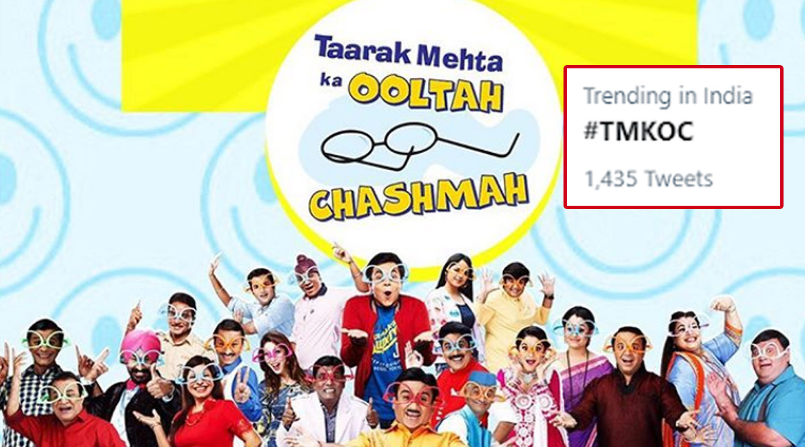

Taarak Janubhai Mehta was an Indian columnist, humourist, writer and playwright who is best known for the column Duniya Ne Undha Chasma,and was a well-known figure in Gujarati theatre.[1] His humorous weekly column first appeared in Chitralekha in March 1971 and looked at contemporary issues from a different perspective. He published 80 books in his whole career.[2] In 2008, SAB TV – a popular entertainment channel india, started the sitcom Taarak Mehta Ka Ooltah Chashmah based on his column,[3] and soon it became the flagship show of the channel. Actor Shailesh Lodha portrayed Mehta in the show till September 2022. He is currently portrayed by actor Sachin Shroff.[4]
 actor